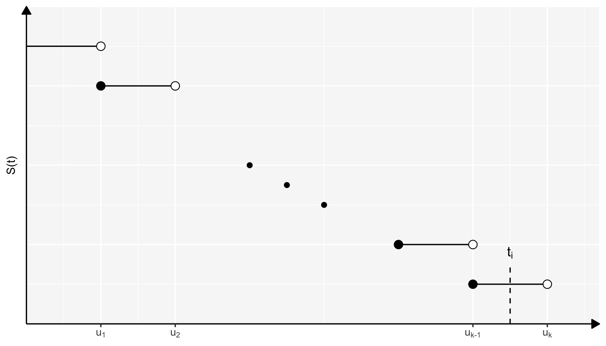
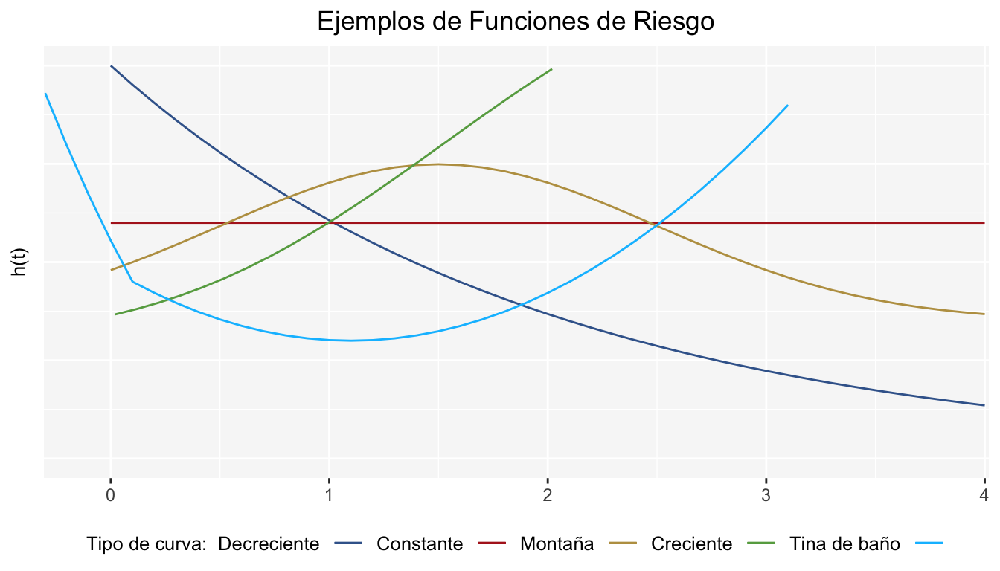
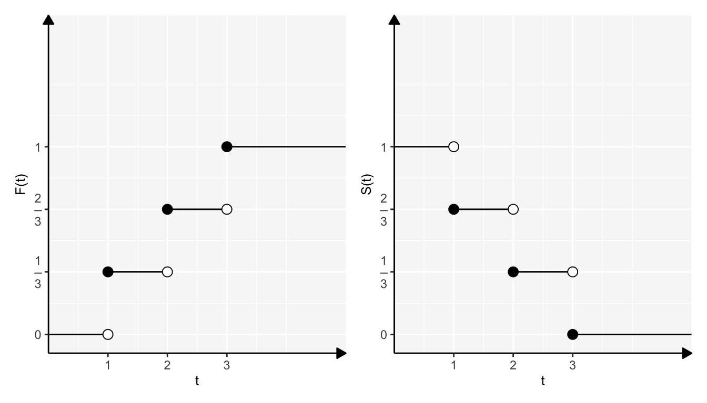

Capítulo 3 Funciones para el Análisis de Supervivencia
Dado que el análisis de supervivencia se basa en tiempos de falla, definiremos a continuación funciones importantes que se pueden asociar a estos. Evidentemente, estamos pensando que los tiempos de falla provienen de una variable aleatoria No negativa \(T\) la cual llamaremos variable aleatoria del tiempo de falla, equivalentemente longitud de tiempo de vida futura o tiempo de superviviencia. Por simplicidad la llamaremos tiempo de supervivencia.
\(T\) es usualmente descrita o caracterizada por cuatro funciones:
- 1.- Función de supervivencia
- 2.- Función de densidad de probabilidad
- 3.- Función de riesgo
- 4.- Función de riesgo acumulado
Estas funciones son matemáticamente equivalentes; a partir de una se derivan las otras tres. Cabe destacar que, dependiendo el caso, \(T\) puede ser una variable aleatoria continua o bien, discreta.
3.1 Función de Supervivencia
Caso continuo
La función de supervivencia \(S(t)\), tanto en el caso continuo como en el discreto, se define como la probabilidad de que un individuo sobreviva más allá del tiempo \(t\). Para el caso continuo:
\[ S(t)=\mathbb{P}(T>t)=1-F_T(t)=\int_{t}^{\infty}f_T(u)du \]
Si tomamos la igualdad \(S(t)=1-F_T(t)\) y derivamos en ambos lados y multiplicamos por \(-1\), obtenemos:
\[ -\frac{d}{dt}S(t)=f_T(t) \]
Las propiedades de \(S(t)\) son:
1.-Es monótona no creciente.
2.- \(S(t)=1\) para \(t=0\).
3.- \(S(t)=0\) cuando \(t\rightarrow\infty\).
La función \(S(t)\) es conocida también como la tasa de superviviencia acumulativa; en el contexto industrial se conoce como función de confiabilidad.
Por otro lado, es de suma importancia representar \(S(t)\) gráficamente ya que de ella se puede obtener información interesante; por ejemplo el cálculo de diversos cuantiles (como el cuantil 50) nos permitirán hacer inferencias y comparar distribuciones de superviviencia de dos o más grupos de individuos. La gráfica de \(S(t)\) es llamada curva de supervivencia, los gráficos de la figura 3.1 son ejemplos de esta.
Figura 3.1: Ejemplos de la curva de supervivencia.
En la primer gráfica se observa una tasa de supervivencia baja, mientras que en la segunda gráfica se tiene una tasa alta. En este contexto, ¿qué podríamos decir de los pacientes con el tratamiento 1 versus los pacientes con el tratamiento 2?
Caso discreto
Si \(T\) es una variable aleatoria discreta que toma valores \(0<t_1<t_2<...\) Entonces la función de probabilidad de \(T\) es:
\[ f(t) = \left\{ \begin{array}{ll} \mathbb{P}(T=t_j) & \mbox{ si } t=t_j, j=1,2,...\\ 0 & \mbox{en otro caso } \end{array} \right. \]
Por lo que su función de supervivencia es:
\[ S(t)=\mathbb{P}(T> t)=\sum_{t< t_j}f(t_j) \] La siguiente es una representación gráfica de la función de supervivencia en el caso discreto

Al igual que el caso continuo, se tienen las propiedades:
1.-Es monótona no creciente
2.- \(S(t)=1\) para \(t=0\).
3.- \(S(t)=0\) cuando \(t\rightarrow\infty\).
Ejemplos del caso continuo y caso discreto
Estos pueden verse al final de la sección 4
3.2 Función de Riesgo
Caso continuo
La función de riesgo \(h(t)\) (hazard function), también llamada tasa de falla condicional (en el análisis de confiabilidad) o tasa de mortalidad (en demografía), se define como la probabilidad de falla durante un intervalo de tiempo muy pequeño suponiendo que el individuo ha sobrevivido hasta el inicio del intervalo1; en expresiones matemáticas es:
\[ h(t)=\lim_{\alpha\rightarrow 0}\frac{1}{\alpha}\mathbb{P}(t<T\leq t+\alpha|T\geq t) \\ =\lim_{\alpha\rightarrow 0}\frac{1}{\alpha}\frac{\mathbb{P}(T\leq t+\alpha)-\mathbb{P}(T<t)}{\mathbb{P}(T\geq t)}\\ =\lim_{\alpha\rightarrow 0}\frac{1}{\alpha}\frac{F(t+\alpha)-F(t)}{S(t)} =\frac{f(t)}{S(t)} \]
Entonces
\[ h(t)=\frac{f(t)}{S(t)}=\frac{f(t)}{1-F(t)}=-\frac{d}{dt}log(S(t)) \]
Si tomamos la igualdad
\[ h(t)=-\frac{d}{dt}log(S(t)) \]
Y despejamos a \(S(t)\) tenemos que:
\[ S(t)=exp\left[-\int_{0}^{t}h(u)du\right]=exp[-H(t)] \]
Donde \(H(t)=\int_{0}^{t}h(u)du\) es conocida como la función acumulada de riesgo, la cual veremos más adelante.
La función de riesgo juega un papel importante en el análisis de supervivencia. Describe la forma en que cambia la tasa instantánea de muerte de un individuo al paso del tiempo (constante, lineal, exponencial, etc.). El conocer \(h(t)\) puede darnos alguna idea sobre la selección del modelo para la distribución del tiempo de supervivencia, por ejemplo, puede ser útil al considerar restricciones para modelos con funciones de riesgo no decrecientes o modelos con funciones de riesgo no crecientes.
No hay un comportamiento “habitual” en la gráfica de \(h(t)\), es decir, \(h(t)\) puede crecer, decrecer, ser constante o mostrar algo más complicado. El esquema siguiente muestra algunos ejemplos de la gráfica de \(h(t)\):

La curva \(h(t)\) en color azul (llamada curva de tina de baño) describe el proceso de la vida humana: al inicio existe mortalidad infantil y el riesgo de morir es alto, crece el individuo y el riesgo de morir se reduce y hasta cierto punto es constante, después viene el envejecimiento(hay deterioro) y entonces el riesgo de morir aumenta. Una función de riesgo creciente como la curva de color verde implica un envejecimiento natural. Una función decreciente como la curva color morado es menos común e indica rejuvenecimiento. Una función en forma de montaña como la curva color café, podría representar un comportamiento de muerte por enfermedad después de llevar un tratamiento para la misma enfermedad.
Caso discreto
En este caso, la función de riesgo proporciona la probabilidad condicional de falla al tiempo \(t=u_k\), dado que el individuo estaba vivo antes de \(u_k\).
Sea \(T\) una variable aleatoria discreta con soporte en \(\{u_1,u_2,u_3,...\}\). La función de riesgo al tiempo \(u_k\) se define como2
\[ h(u_k)=\mathbb{P}(T=u_k|T\geq u_k)=\frac{\mathbb{P}(T=u_k)}{\mathbb{P}(T\geq u_k)} =\frac{f_T(u_k)}{S_T(u_{k-1})} \]
Observemos que:
\[ f_T(u_k)=\mathbb{P}(T=u_k)=\mathbb{P}(T\geq u_k)-\mathbb{P}(T> u_{k})= S(u_{k-1})-S(u_{k}) \]
si dividimos entre \(S(u_{k-1})\), tenemos entonces:
\[ h(u_k)=\frac{S(u_{k-1})-S(u_{k})}{S(u_{k-1})}=1-\frac{S(u_{k})}{S(u_{k-1})} \]
Por otro lado, para \(S(t)\) se cumple que:
\[ S(t)=\frac{S(t)}{1}=\frac{S(t)}{S(0)}=\frac{S(u_1)}{S(0)}.\frac{S(u_2)}{S(u_1)}.\frac{S(u_3)}{S(u_2)}...\frac{S(u_k)}{S(u_{k-1})}.\frac{S(t)}{S(u_k)} \]
Entonces, de la expresión anterior y ocupando que \(h(u_k)=1-\frac{S(u_{k})}{S(u_{k-1})}\) tenemos finalmente:
\[ S(t)=\prod_{k: u_k \leq t}\frac{S(u_k)}{S(u_{k-1})} =\prod_{k: u_k \leq t}(1-h(u_k)) \]
Si queremos obtener \(f(u_k)\), la podemos conocer partir de la función de riesgo:
\[ f(u_k)=\frac{f(u_k)}{S(u_{k-1})}S(u_{k-1})=h(u_k)S(u_{k-1})=h(u_k) \prod_{j<k} \frac{S(u_j)}{S(u_{j-1})}=h(u_k) \prod_{j<k}(1-h(u_j)) \]
La expresión
\[ S(t)=\prod_{k: u_k \leq t}(1-h(u_k)) \]
la ocuparemos más adelante.
Ejemplo
Suponga que se tiene la siguiente distribución para la variable aleatoria \(T\): \(\mathbb{P}(T = j) = \frac{1}{3}; \ \ j = 1,2,3\), la cual queda representada en la siguiente gráfica.

Para este caso se tienen los siguientes resultados:
\[ S(t) = \left\{ \begin{array}{ll} 1 & -\infty<t<1\\ \frac{2}{3} & 1\leq t<2\\ \frac{1}{3} & 2\leq t < 3\\ 0 & t\geq 3 \end{array} \right. h(t) = \left\{ \begin{array}{ll} \frac{f(1)}{S(0)} = \frac{1}{3} & t = 1\\ \frac{f(2)}{S(1)} = \frac{1}{2} & t = 2\\ \frac{f(3)}{S(2)} = 1 & t = 3 \end{array} \right. \]
3.3 Función de Riesgo Acumulado
Caso continuo
Esta función, denotada por \(H(t)\), es importante en la medición de la frecuencia con que ocurren los fallos en el tiempo y en el análisis de residuos para el ajuste de algunos modelos. \(H(t)\) se define como sigue:
\[ H(t)=\int_{0}^{t}h(u)du \] Hemos visto anteriormente que:
\[ S(t)=exp(-H(t)) \]
entonces
\[ H(t)=-log(S(t)) \]
Podemos calcular a \(f(t)\) en términos de \(h(t)\) y \(H(t)\):
\[ f(t)=h(t)S(t)=h(t)exp(-H(t)) \]
Caso discreto
\(H(t)\) se define como:
\[ H(t)=\sum_{k: u_k\leq t}h(u_k) \]
Una definición alternativa es:
\[ H(t)=-\sum_{k: u_k\leq t}log(1-h(u_k)) \]
Aunque en la definición de \(h(t)\) se tenga explícitamente la palabra “probabilidad”, hay que tener en claro que esta función no es una función de probabilidad, si no tal cual una tasa, ya que la acumulación de esta puede dar valores superiores a 1.↩︎
\(\mathbb{P}(T\geq u_k) = \mathbb{P}(T>u_{k-1}) = S(u_{k-1})\) por el hecho de estar tratando con una variable discreta, ya que el siguiente valor de \(u_{k-1}\) en la lista \(\{u_1, \dots, u_{k-1}, u_{k}\}\) es \(u_k\).↩︎